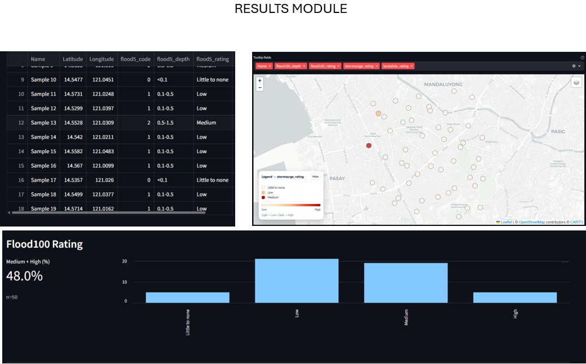
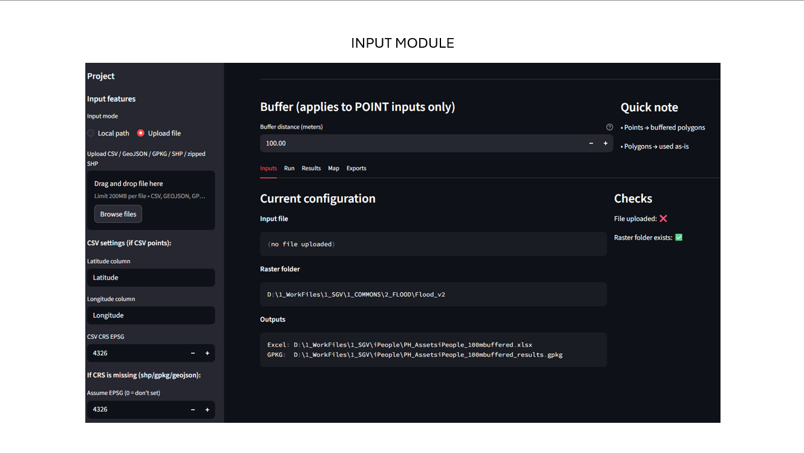
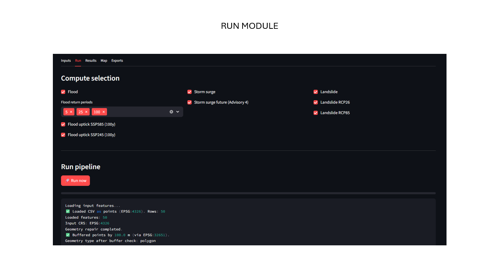

Paola Jayme Romaguera
Climate Risk • GIS • Remote Sensing • Python
Personal mini-app • Streamlit • GIS automation
Hazard Exposure Assessment Dashboard
A personal workflow tool to speed up and standardize hazard exposure assessments for geographically distributed asset portfolios. This case study is independent and uses only public-domain, synthetic, or sanitized examples.



Click thumbnails to preview. (You can swap these images anytime.)
Objective
- Reduce manual steps when assessing tens to hundreds of sites.
- Produce decision-ready outputs: exposure metrics + clean visuals.
- Improve consistency using a repeatable, standardized workflow.
Approach
- Ingest asset locations and selected hazard layers.
- Automate overlays and summarization into exposure indicators.
- Generate maps/charts for interpretation and reporting.
Tools
- Streamlit for the interface and modular workflow steps
- GIS overlays + spatial joins for exposure extraction
- Python (optional) for preprocessing and automation
My role
- Designed the end-to-end workflow and information architecture.
- Defined exposure metrics and standardized output formats.
- Built this as a personal optimization initiative (not client delivery).
Key takeaways
- Exposure assessments become faster and more scalable for large, distributed portfolios.
- Standardized outputs reduce rework and improve cross-project consistency.
- Clear visuals improve communication with non-technical stakeholders.
Workflow snapshot
High-level view of the modules and output flow.

Data privacy note
This case study is described at a high level. Visuals should use public-domain, synthetic, or sanitized examples. No proprietary client datasets or internal systems are included.